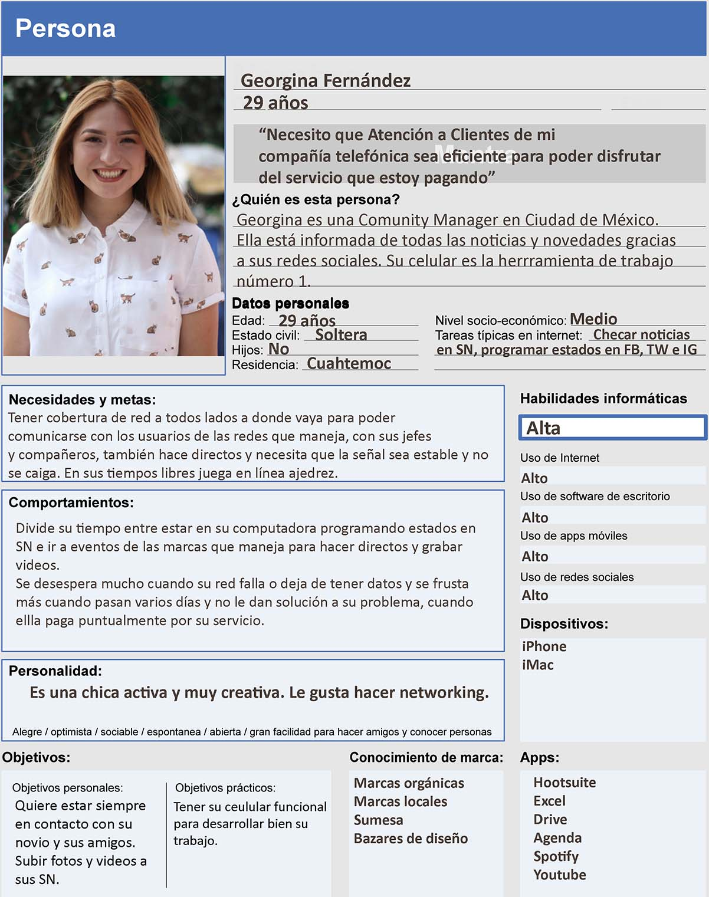
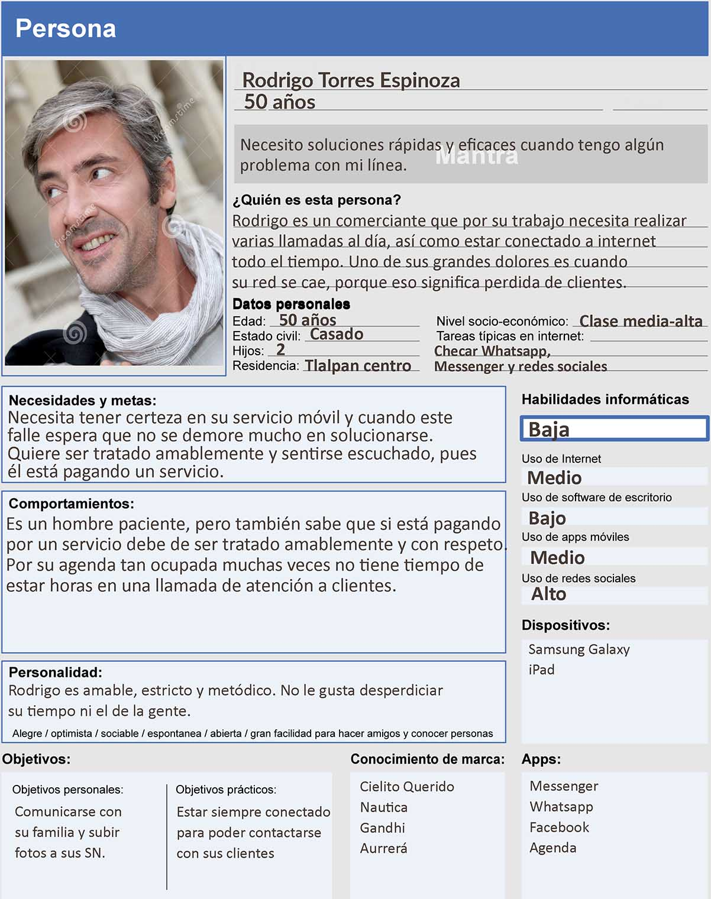
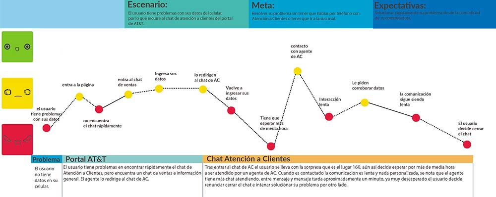
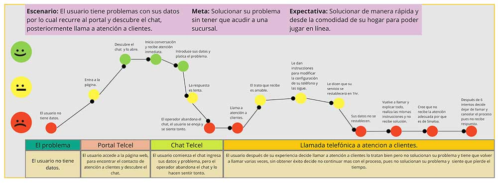
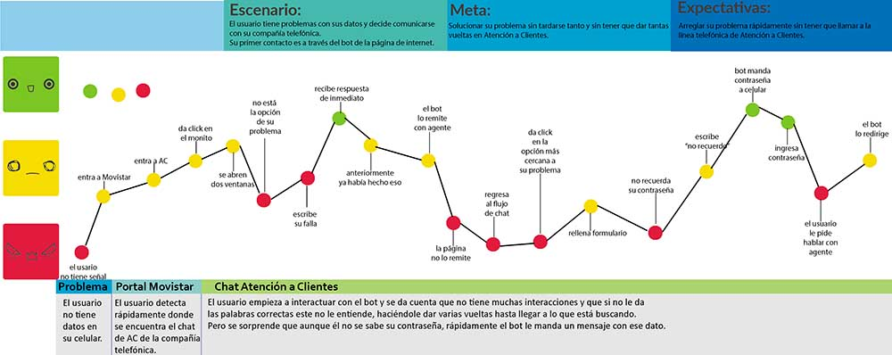

Introducción:
TELMOBI(compañía ficticia de telecomunicaciones) es una de las principales empresas de telecomunicaciones en México que actualmente provee servicios de telefonía móvil e Internet y, en menor medida, telefonía fija. A partir de junio de este año, el Instituto Federal de Telecomunicaciones (IFT), aprobó la fusión de TELMOBI con Verne, empresa con liderazgo mundial en medios y contenidos. El objetivo de esta megafusión es ofrecer servicios de cuádruple play: telefonía fija y móvil, internet y televisión.
Tras esta fusión y la implementación de nuevos servicios aumentó la carga de trabajo de varias áreas, entre ellas el área de call center que atiende los casos de atención a clientes para resolver problemas y levantar números de reporte con relación a fallas de servicio, problemas de hardware, software, aplicaciones y otros.
Cliente:
Este fue un trabajo realizado en el bootcamp intensivo con especialización en UX, Laboratoria.
El Equipo:
UX Research: Estephania Molina.
UX Research: Lex.
Mi papel:
UX Research
Problema:
TELMOBI(compañía ficticia de telecomunicaciones), ha decididio implementar un asistente virtual (Chatbot) para reducir las llamadas que ingresan al call center, ayudando al usuario a resolver los problemas más frecuentes.
Acciones:
Mi contribución:
En este proyecto participé en todos los procesos.
Proceso
Entrevistas
Para hacer nuestras user personas decidimos basarnos en entrevistas e información recabada en el IFT.
Los principales insights de estas entrevistas fueron los siguientes:
User Persona
 Costumer Journey
Para tener bien detectados los pain points de los usuarios de las principales compañías de telefonía celular en nuestro país, decidimos generar los costumer journeys de cada servicio:
AT&T
Telcel
Movistar
Con esto detectamos los siguientes insights:
Prototipos de alta fidelidad
Para este proyecto decidimos que el primer alcance del chatbot sería por medio de redes sociales. En este caso creamos una fanpage de "Telmobi" y vinculamos la plataforma BotStar con esta cuenta.
Si quieres interactuar con Sofía, da click aquí